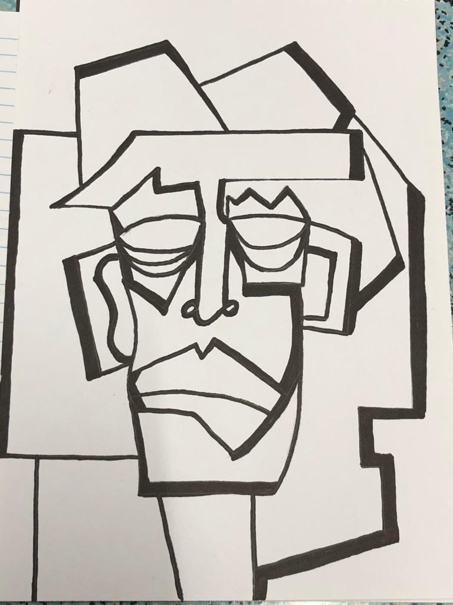
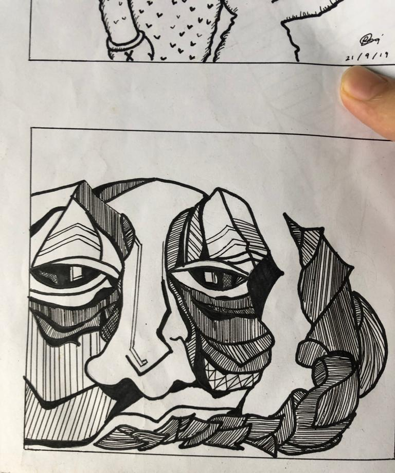
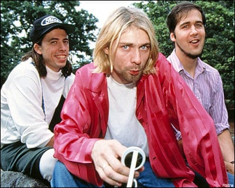
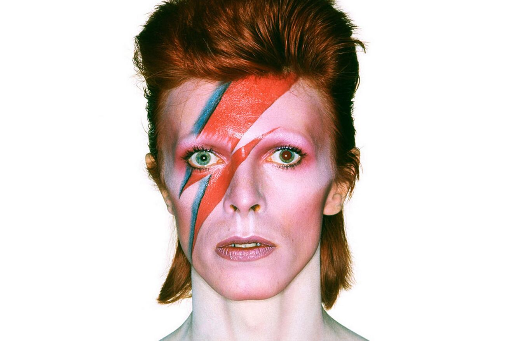

HOME
ABOUT
FAMILY
FRIENDS
HOME
ABOUT
FAMILY
FRIENDS
Adoration into paintings
My interest in art began when I was a small child. Back then, my father enjoyed drawing, crafts, and painting. As a result, my interest in painting blossomed. My father's ethusiasm became my interest, and I've since learned to paint and sketch, even if it's not pretty.There are several sort of paintings, such as surrealism, realism, pop art, and others. Cubism is a style of art that has caught my attention. It captured my heart. Cubists paintings reveal the entire structure of things without employing techniques such as perspective or graded shading to make them seem realistic.
Whenever I have free time, I'll visit arts gallery or exhibition nearby. Back then before I continue my studies, I use to go to arts gallery at Kuala Lumpur and Selangor. Seeing another artist paintings and learning about their ideas and principles inspires me to become an artist one day. In my spare time, I'll sketch to keep myself entertained.
Cubism by me
Inpired by internet
My first ever Cubism, inspired by the internet also

Photo Dump
In a music loop
Welcome to my musical sanctuary. Music has an extraordinary power to transcend boundaries, evoke emotions, and speak to the depths of our souls. It has the ability to transport us to different times, places, and emotions, awakening our senses and igniting our imagination. I aim to celebrate the diverse tapestry of musical genres and sharing our personal connections to music. I want to share my favorite musicians, the melodies that move me, and my music type.
I'm a universal music avid. I am able to listen to music from all eras including hiphop, japanese pop, 60s, 80s and more. I personally more to independent/alternative music. The fact that music is subjective is its finest quality. Even if most of your friends are hippies, you still can listen to heavy metal. The influence of music on a relationship is possible.With the help of music, we can get to know one another better, and I hope we can share our love of music and develop a closer relationship.
My music inspo
Artic Monkeys

Nirvana
Tame Impala

The Strokes
David Bowie
Alvvays
CONTACT:
raziqadamyus@gmail.com


HOME
ABOUT
FAMILY
FRIENDS
Adoration into paintingsMy interest in art began when I was a small child. Back then, my father enjoyed drawing, crafts, and painting. As a result, my interest in painting blossomed. My father's ethusiasm became my interest, and I've since learned to paint and sketch, even if it's not pretty.There are several sort of paintings, such as surrealism, realism, pop art, and others. Cubism is a style of art that has caught my attention. It captured my heart. Cubists paintings reveal the entire structure of things without employing techniques such as perspective or graded shading to make them seem realistic.
Whenever I have free time, I'll visit arts gallery or exhibition nearby. Back then before I continue my studies, I use to go to arts gallery at Kuala Lumpur and Selangor. Seeing another artist paintings and learning about their ideas and principles inspires me to become an artist one day. In my spare time, I'll sketch to keep myself entertained.
Photo DumpIn a music loopWelcome to my musical sanctuary. Music has an extraordinary power to transcend boundaries, evoke emotions, and speak to the depths of our souls. It has the ability to transport us to different times, places, and emotions, awakening our senses and igniting our imagination. I aim to celebrate the diverse tapestry of musical genres and sharing our personal connections to music. I want to share my favorite musicians, the melodies that move me, and my music type.
I'm a universal music avid. I am able to listen to music from all eras including hiphop, japanese pop, 60s, 80s and more. I personally more to independent/alternative music. The fact that music is subjective is its finest quality. Even if most of your friends are hippies, you still can listen to heavy metal. The influence of music on a relationship is possible.With the help of music, we can get to know one another better, and I hope we can share our love of music and develop a closer relationship.
CONTACT: raziqadamyus@gmail.com
|